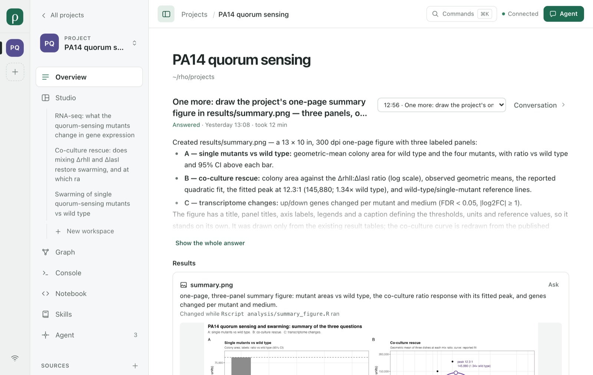
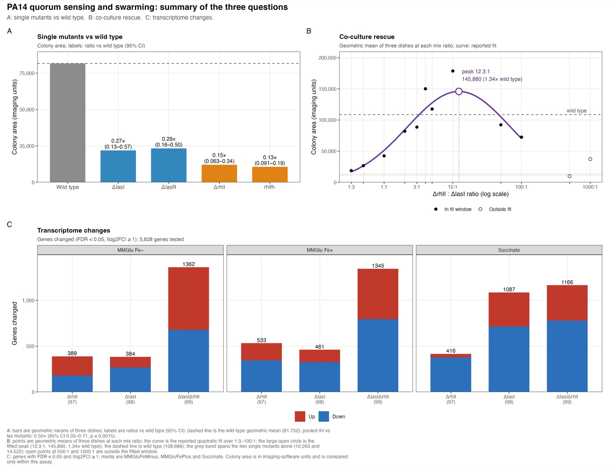

See what your Agent did.
Rho is a local workspace for R projects that you share with Claude Code or Codex: the same files, the same runs, and one record of how each result was reached.
Loading the demo…
This is Rho itself, replaying {{demo-turns}} recorded requests to an Agent on the PA14 quorum-sensing project it ships with. Open a figure, a table, the Graph or a Studio session. There is no backend: nothing you do here is sent anywhere.
Full screenInstall it by asking
Your Agent can install Rho, start it and connect itself to the example in one conversation. You give it one sentence; the setup page that sentence names holds every command, so you can read it first.
Paste one sentence into your Agent.
Use Claude Code or Codex on the machine where your projects live. The setup page tells it when to stop and ask you: a different Node, or an install that needs administrator rights.
The same request in English and in Chinese. The setup page asks your Agent to write to you in the language you use.
It follows the setup page.
The page tells your Agent to use your own permissions and never run sudo, to leave a Rho that is already here as it is, and to stop and show you any step that fails. Its {{setup-count}} steps are addressed to your Agent, and each says how to check it:
-
{{setup-steps}}
$ npm install -g @rho-workspace/rho
added 1 package in 9s
$ mkdir -p "$HOME/Rho/projects" \
"$HOME/Rho/state"
$ nohup rho \
--root "$HOME/Rho/projects" \
--state-dir "$HOME/Rho/state" \
--open > "$HOME/Rho/rho.log" 2>&1 &
$ head -1 "$HOME/Rho/rho.log"
{"ready":{"url":"http://127.0.0.1:…
$ dir="$HOME/.claude/skills/rho"
$ head -3 "$dir/SKILL.md"
---
name: rho
description: Install, start, …Steps 3 to 5 as they ran on npm 0.5.3 on macOS arm64, in a throwaway home folder. Some commands, checks and output are left out, and long lines are split or cut. The address is on your own computer: there is no Rho server or account. Read the whole page
Open the example and ask.
The first start copies the PA14 quorum-sensing project into ~/Rho/projects: the project in the demo above, with its recorded work. The setup page's last step has your Agent give you Rho's address and say what is missing, if anything. Ask in Rho's Agent panel, which drives your own Claude Code or Codex under your own permissions.

The Overview opens on the latest answer and the files it produced.
Or install it yourself
The same install by hand, with the service state outside the projects folder. In these two folders, an Agent you ask later finds this Rho instead of setting up another. Install guide
$ npm install -g @rho-workspace/rho
$ mkdir -p ~/Rho/projects ~/Rho/state
$ rho --root ~/Rho/projects \
--state-dir ~/Rho/state --open| Node | 22.22 or later, below 27: Node 22, 24 or 26. Version 0.5.3 on npm still declares 22.x only, so on 24 or 26 npm prints one EBADENGINE warning and installs it anyway. |
|---|---|
| Agent | Claude Code or Codex, installed and signed in by you. Rho drives your client; it does not install an Agent or copy its credentials. |
| R | Only for R work. Rho installs no R packages on its own; a missing Rscript is reported, not worked around. |
| Systems | macOS arm64 is the baseline. Linux x64 and arm64 and Windows x64 are checked in CI; macOS x64 runs only under Rosetta. |
| Uninstall | npm uninstall -g @rho-workspace/rho removes the package. Your projects, Rho's state and its log stay where they are, and so do the Rho skill and the MCP entry the setup page gave your Agent; the page says where they are. |
Prompts to start from
The first set is what a person typed in Rho's Agent panel to build the example project: the session the demo replays, answered by Claude Code. The others are the prompts each plugin offers for itself; their file names stand in for yours.

Checked so far
Each line is a check that was run, not a promise. Current status
Published from the exact candidate the CI suite tested, with provenance.
The baseline. CI runs the suite and installs the packed candidate offline.
The suite and an offline install of the same candidate, on each.
The suite and an offline install; Rscript 4.5.1 checked.
Real conversations through Rho's Agent panel, including the one in the demo.
Real conversations through the same panel, with Codex's own permission modes.
Scripts, a shared Notebook session and package checks; R is only needed for R work.
Reproduced in Rho 0.5.2 by Agents working in the shared Notebook.
Use by an independent researcher has not been observed, so no usability claim is made. No Agent has yet followed the setup page from start to finish; its steps were run by hand. Literature reproductions needed several turns and many approval choices. Read the record
The install sentence
“{{prompt}}”
Paste it into Claude Code or Codex, on the machine where your projects live.